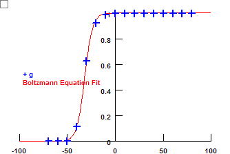

Delayed rectifier potassium current (IDR, KDR, or IK) is an important outward current regulating the firing properties of excitable cells. Thus, it is wise to carefully select an available model or create one based on experimental data. I tested the models in Bianchi et al's paper (2012), Gonzalez et al's paper (2011), and Migliore's paper (1996). These models generate currents which are distinct from IDR observed in CA1 pyramidal neurons. Thus, I created a new model based on Mohapatra et al's data (2009) and Hoffman's data (1997). This model is more suitable to simulate IDR in CA1 pyramidal neurons.
| Vhalf = 13.0 (mV); k = -8.8 (mV) |
V1/2 is too hyperpolarized. The absolute value of k is too small.
| Vhalf = -31.9 (mV); k = -4.1 (mV) |
V1/2 is too hyperpolarized.
|  | ||
| Vhalf = -41.7 (mV); k = -1.4 (mV) |
g = gbar * n^4 * l
Target Activation Curve:
Vhalf = 2 (mV) (Ref: Chen (2004)
k = 7 (mV) (Ref:
Chen (2004)
n (activation particle):
Vhalf = -13.9 (mV)
k = -9.1 (mV)
tau = 1.8 (ms) (Ref: Hoffman (1997))
l (inactivation particle):
Vhalf = -28.8 (mV) (Ref: Mohapatra (2009)
k = 11.4 (mV) (Ref: Mohapatra (2009)
tau =
500 (ms) (Ref: Mohapatra (2009)
P = 0.25 (1) (Ref: Mohapatra (2009)
Program used to find parameters for n: BoltzmannPowerFit.py
Command to run the program in the cmd console: ipython3 BoltzmannPowerFit.py -- pylab
NMODL file: kdr_p.mod
Results
|
| ||
| Vhalf = 1.9 (mV); k = -6.9 (mV) |